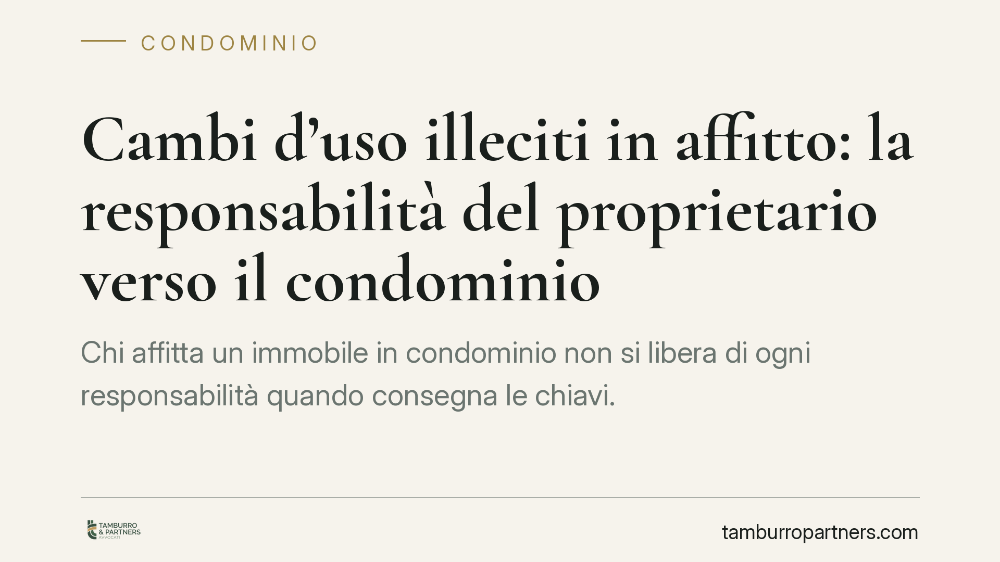

Cambi d'uso illeciti in affitto: la responsabilità del proprietario verso il condominio
Chi affitta un immobile in condominio non si libera di ogni responsabilità quando consegna le chiavi. Un orientamento di merito torna a ricordare che il locatore può rispondere verso il condominio dei cambi di destinazione d'uso vietati dal regolamento e realizzati dal conduttore. Un tema che tocca locatori, conduttori e amministratori, con ricadute pratiche sulla redazione del contratto di locazione.

Il principio in discussione
Il dibattito ruota attorno a una domanda semplice: se il conduttore trasforma l'appartamento in qualcosa di vietato dal regolamento condominiale — ad esempio una struttura ricettiva o un'attività rumorosa dove è consentito solo l'uso abitativo — chi ne risponde davanti al condominio?
Secondo una lettura seguita da parte della giurisprudenza di merito, il proprietario non è estraneo alla vicenda. Resta titolare della proprietà e conserva un dovere di vigilanza sull'uso che il conduttore fa del bene. Non può quindi scaricare ogni conseguenza sul solo inquilino, soprattutto quando il divieto discende dal regolamento che vincola la proprietà stessa.
Inquadramento normativo
Il punto decisivo è la natura del regolamento condominiale. Occorre distinguere due tipi.
Il regolamento assembleare, approvato a maggioranza ai sensi dell'art. 1138 c.c., disciplina l'uso delle parti comuni e la ripartizione delle spese, ma non può imporre limiti alle destinazioni d'uso delle proprietà esclusive.
Il regolamento contrattuale, accettato da tutti i condomini e trascritto, può invece incidere sulle proprietà individuali: può vietare determinate attività all'interno dei singoli appartamenti. È questo il regolamento che fonda i divieti di cambio d'uso opponibili al proprietario.
Sul versante del decoro architettonico, il riferimento corretto è l'art. 1120 c.c., che vieta le innovazioni lesive del decoro dell'edificio, letto insieme all'art. 1102 c.c. sui limiti all'uso della cosa comune. Non si tratta dell'art. 1122-bis c.c., che riguarda tutt'altro (impianti per ricezione radiotelevisiva ed energia da fonti rinnovabili).
Quanto all'azione, l'amministratore può agire in giudizio per far cessare l'uso illecito senza preventiva delibera assembleare, trattandosi di attività rientrante tra i poteri di tutela dell'uso delle cose comuni e di esecuzione del regolamento.
Il nodo dell'opponibilità al conduttore
Il conduttore non è parte del condominio e non firma il regolamento. Perché i divieti regolamentari gli siano opponibili, è necessario che il contratto di locazione li richiami espressamente e che il conduttore li accetti.
In assenza di questo richiamo, il condominio potrà rivolgersi al proprietario, ma quest'ultimo rischia di non avere strumenti contrattuali efficaci per reagire nei confronti dell'inquilino. Da qui l'importanza di una redazione accurata del contratto.
Il danno al decoro non è automatico
Un punto va sottolineato per evitare aspettative sbagliate. La violazione del regolamento legittima la richiesta di cessazione dell'uso illecito, ma il risarcimento del danno al decoro non è automatico.
Chi lo chiede deve allegare e provare in concreto la lesione: non basta affermare che il decoro sia stato compromesso. Serve dimostrare in cosa consista il pregiudizio e quale ne sia l'entità. Senza questa prova, la domanda risarcitoria resta fragile, anche quando la violazione regolamentare è accertata.
Implicazioni pratiche
Per chi affitta, il messaggio è chiaro: la posizione di locatore non è neutra rispetto agli obblighi condominiali. Un conduttore che viola il regolamento può esporre il proprietario a un'azione del condominio.
Per l'amministratore, resta confermata la possibilità di agire direttamente, ma con l'onere di documentare il danno quando si chiede un ristoro economico.
Per il conduttore, i vincoli regolamentari diventano realmente vincolanti solo se trasfusi nel contratto.
Cosa fare in concreto
- Richiamate espressamente il regolamento condominiale nel contratto di locazione, allegandone copia e facendolo sottoscrivere al conduttore.
- Inserite una clausola risolutiva espressa che leghi la risoluzione del contratto all'uso dell'immobile in violazione delle destinazioni consentite.
- Specificate la destinazione d'uso ammessa in modo puntuale, escludendo attività ricettive o commerciali non consentite.
- Verificate la natura del vostro regolamento (assembleare o contrattuale) prima di invocare divieti sulle proprietà esclusive.
- Documentate per tempo eventuali abusi, se amministratori, raccogliendo elementi utili a provare il danno in un eventuale giudizio.
---
*Nota: le pronunce di merito richiamate hanno valore orientativo e non vincolante; non costituiscono diritto consolidato e possono essere superate da interpretazioni difformi.*
Contributo informativo a cura di Tamburro & Partners Avvocati – Avv. Giuseppe Tamburro. Non costituisce parere legale.
Ogni condominio ha una storia a sé.
Se gestisci un'amministrazione e vuoi un confronto su una specifica questione condominiale, scrivi allo studio. Ti rispondiamo entro un giorno lavorativo.